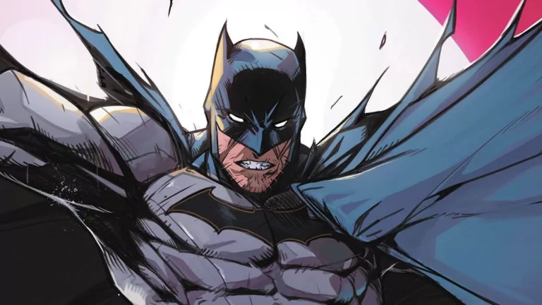

¿Quien es Batman?

Breve historia de Batman
Batman (conocido inicialmente como The Bat-Man y en español como el Hombre Murciélago) es un superhéroe ficticio de cómic creado por los estadounidenses Bob Kane y Bill Finger, y propiedad de DC Comics.
La identidad secreta de Batman es Bruce Wayne (Bruno Díaz en algunos países de habla hispana), es un multimillonario magnate empresarial y filántropo dueño de Empresas Wayne en Gotham City. Después de presenciar el asesinato de sus padres, el Dr. Thomas Wayne y Martha Wayne en un violento y fallido asalto cuando era niño, juró venganza contra los criminales, un juramento moderado por el sentido de la justicia. Bruce Wayne se entrena física e intelectualmente y crea un traje inspirado en los murciélagos para combatir el crimen, con sus gadgets de combate del batcinturón y sus vehículos.